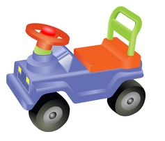
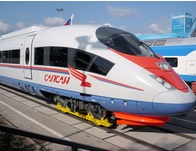
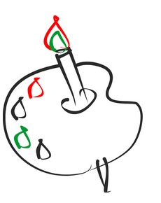

За рулем сижу довольный ‑
Ездить просто и легко!
Только руль чуть-чуть огромный
И педали далеко.

Мне купили паровозик
Сразу два вагона возит.
Я включу его, и обвинять
За собой везет вагон.
Вот бы мне в нём прокатиться,
Только жаль ‑ не поместиться.

Нарисую я в альбоме
Голубое море,
Белый парус над волною
Бьется на просторе.